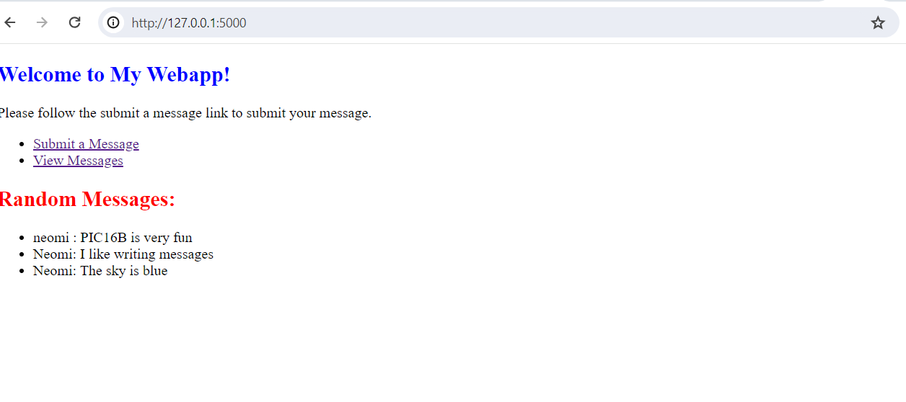
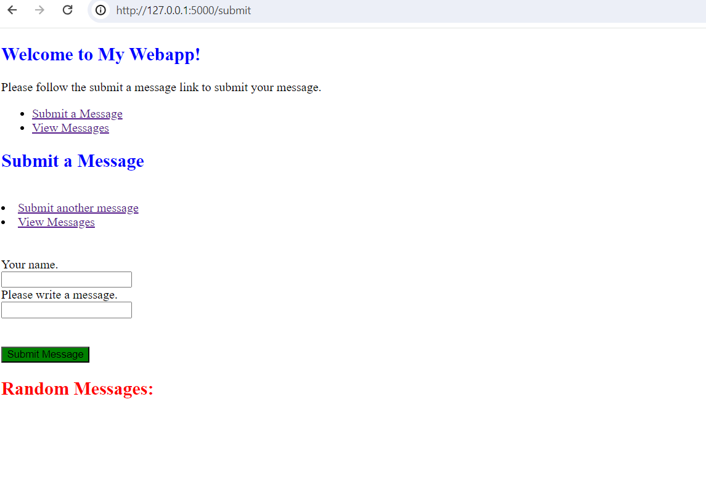
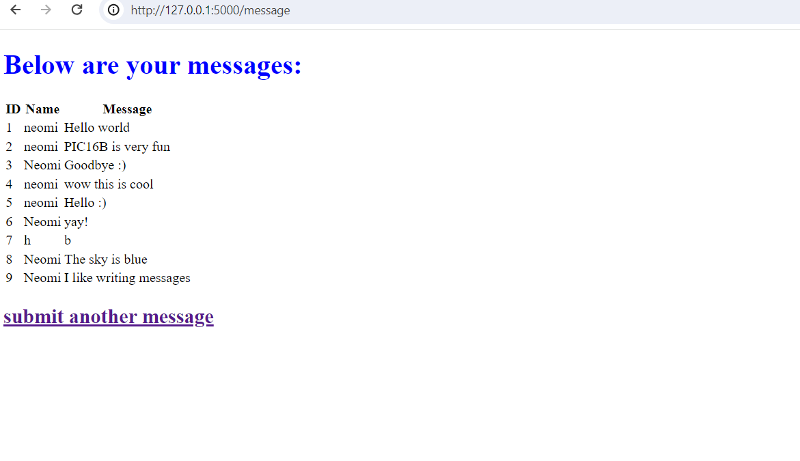

# Function to get the message database
"""
Retrieve the SQLite database connection for storing messages.
If the 'message_db' attribute is not present in the global 'g' object,
it creates a new connection to the SQLite database defined by the
'DATABASE' constant. It also creates a 'messages' table in the database
if it doesn't already exist.
Returns:
- sqlite3.Connection: The SQLite database connection object.
"""
def get_message_db():
if 'message_db' not in g:
g.message_db = sqlite3.connect(DATABASE)
cursor = g.message_db.cursor()
cursor.execute('''CREATE TABLE IF NOT EXISTS messages (
id INTEGER PRIMARY KEY,
handle TEXT,
message TEXT
)''')
g.message_db.commit()
return g.message_db
HW3: Creating a Webapp
In this blog post I will go over how to develop and create your own webapp
To start I created a github repository where I placed all my files, so I could easily commit and push any changes I have made
Step 1: Creating the HTML files
To first start I created three HTML files, base.html, submit.html, and view.html. each one of them fullfill a diffrent porpose that I will explain below.
Base.html
This HTML code sets up the main page that opens up when you open the URL. Within the first page, you are displayed with the two links, to either see the message or to submit a message, as well as a list of random messages that have been submitted previously.
<!doctype html>Random Messages:
-
{% for message in messages %}
- {{ message[1] }}: {{ message[2] }} {% endfor %}
Submit.html
This html takes care of the page in which indvdiuals submit their message. They are asked to provide their name and submit a message. Once submitting, they can then also chose to see any previous message or be directed to main page.
{% extends ‘base.html’ %}
{% block header %}{% block title %}Submit a Message{% endblock %}
{% endblock %}
{% block content %}/* this sets up the two links for people to either view the message or go back to the first main page */
/* this will change the header to blue and the submit botton to green*/ /* this section prompts the users to write their name and leave a message, and creates the submit botton*/
{% endblock %}
View.html
This last html presents the messages that have been submmited and orders them inside a table so it is easier to view past messages.
<!doctype html>Below are your messages:
/* this for loop goes through all the messages and organizes them inside a table */ {% for message in messages %} {% endfor %}| ID | Name | Message |
|---|---|---|
| {{ message[0] }} | {{ message[1] }} | {{ message[2] }} |
submit another message
Step 2: Creat functions for data base mangment
First we need to import all the packages we might be using
from flask import Flask, g, render_template, request import sqlite3
import sklearn as sk import matplotlib.pyplot as plt import numpy as np import pickle import os from matplotlib.backends.backend_agg import FigureCanvasAgg as FigureCanvas from matplotlib.figure import Figure
import io import base64
First we start by creating a datavase and naming it as well as intializing flask applications. The base function retrives 3 random messages and renders the base.html templetes, which also passes the messages to be displayed on the main page. The submit function tkaes the POST commend to add the message into the database. The submit.html templet is then rendered to prompt users to submit a message. Lastly, the message function retrives all the messages that were added to the database amd renders the view.html template which displays the messages to the users.
““” This script contains routes and functions for a Flask web application.
It defines routes for the main page, message submission, and viewing messages. ““”
DATABASE = ‘messages_db.sqlite’ app = Flask(name)
““” Renders the main page of the web application.
Retrieves 3 random messages and renders the 'base.html' template with these messages.
"""@app.route(‘/’) def base(): messages = random_messages(3) # Retrieve 3 random messages return render_template(‘base.html’, messages=messages)
““” Handles message submission.
If the request method is POST, it inserts the message into the database.
Renders the 'submit.html' template.““” @app.route(‘/submit’, methods=[‘GET’,‘POST’]) def submit(): if request.method == ‘POST’: insert_message(request) return render_template(‘submit.html’)
““” Displays all messages stored in the database.
Retrieves all messages from the database and renders the 'view.html' template with these messages.““” @app.route(‘/message’) def message(): db = get_message_db() cursor = db.cursor() cursor.execute(“SELECT * FROM messages”) messages = cursor.fetchall() cursor.close() return render_template(‘view.html’, messages=messages)
This function then retrives trhe SQLite database connection used for storing the messages that were submitted by the users.
We then need to create a function that inserts the message into the database.It retracts the name of the user and their message from the form data using the request.form[‘nm’] and request.form[‘message’].Then, it executes an SQL query to insert the name and message into the ‘messages’ table in the database.
Function to insert a user message into the database
def insert_message(request): ““” Insert a user message into the database.
Args:
- request (flask.request): The request object containing form data.
Returns:
- str: The message that was inserted into the database.
"""
db = get_message_db()
cursor = db.cursor()
name = request.form['nm']
message = request.form['message']
cursor.execute("INSERT INTO messages (handle, message) VALUES (?, ?)", (name, message))
db.commit()
cursor.close()
return messageLastly, the last two functions display the page that presents the list of random messages and randomizes the message that are being presented.
@app.route('/view_messages')
def view_messages():
"""
Display a page showing a random selection of messages.
Returns:
- flask.render_template: HTML page displaying the random messages.
"""
messages = random_messages(5) # You can change the number of messages to retrieve
return render_template('view.html', messages=messages)
# Function to retrieve n random messages from the database
def random_messages(n):
"""
Retrieve n random messages from the database.
Args:
- n (int): Number of random messages to retrieve.
Returns:
- list: A list of tuples containing the retrieved messages.
"""
db = get_message_db()
cursor = db.cursor()
cursor.execute("SELECT * FROM messages ORDER BY RANDOM() LIMIT ?", (n,))
messages = cursor.fetchall()
cursor.close()
db.close() # Close the database connection
return messagesOnce we have wrote all the code and saved all the files we then run the following code in the terminal to publish the webapp and get the url for it
set FLASK_ENV=app.py
flask run
Here is what my webapp looks like
First is the main page the user sees when opening the URL

Once opening the submit a message url you are prompted to this page

lastly, here is the list of message you can view once opining the view messages link
